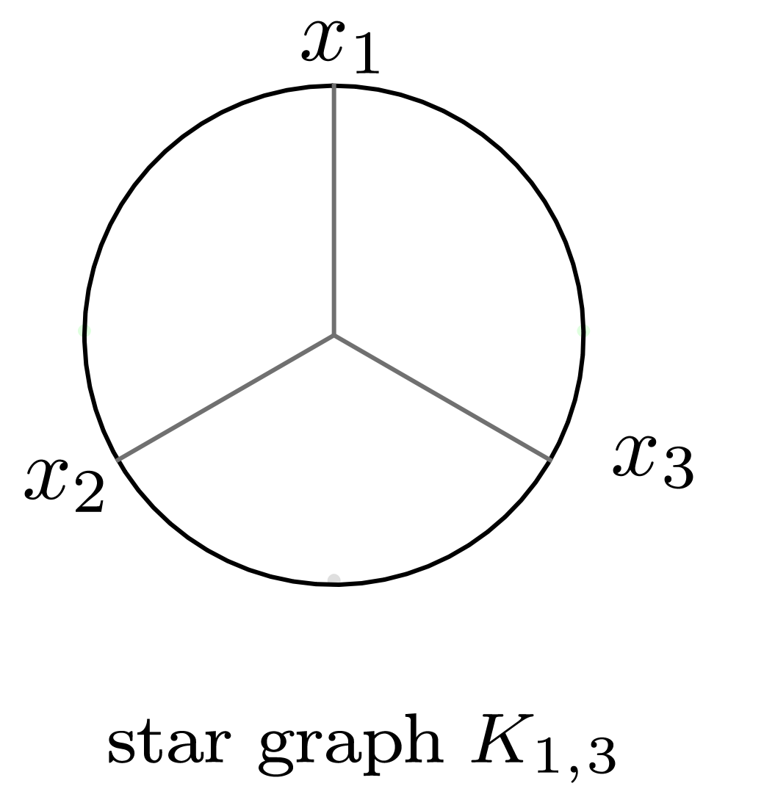

Quasimodular
In this module, we compute the solution of the system $Ax=b$, where $A$ is a matrix from homogeneous Eisenstein series $E_2, E_4, E_6$ and $b$ from the Feynman Integral $I(q)$ The solution is of the form (factor, coefficients) where coefficients is a vector of rationals numbers. Given a Feynman Integral
\[I(q)=\sum_{n=1}^{d} a_i q^{d},\]
we compute the coefficients $b_{i,j,k}$ such that
\[I(q)=\sum_{\substack{i,j,k \in \mathbb{N}_0 \\ 2i+4j+6k=d}} b_{i,j,k} E_2^i E_4^j E_6^k\]
Example
Caterpillar genus 3
Consider the Caterpillar 3 graph

We define first a polynomial ring in one variable $q$.
julia> R,q=polynomial_ring(QQ,["q"])
(Multivariate polynomial ring in 1 variable over QQ, Nemo.QQMPolyRingElem[q])julia> G = FeynmanGraph([(1, 3), (1, 2), (1, 2), (2, 4), (3, 4), (3,4)] )
FeynmanGraph([(1, 3), (1, 2), (1, 2), (2, 4), (3, 4), (3, 4)])We then define the FeynmanIntegral type.
julia> F=FeynmanIntegral(G)
FeynmanIntegral(FeynmanGraph([(1, 3), (1, 2), (1, 2), (2, 4), (3, 4), (3, 4)]), Dict{Symbol, Dict{Vector{Int64}, Nemo.QQMPolyRingElem}}(), (Multivariate polynomial ring in 14 variables over QQ, Nemo.QQMPolyRingElem[x[1], x[2], x[3], x[4]], Nemo.QQMPolyRingElem[q[1], q[2], q[3], q[4], q[5], q[6]], Nemo.QQMPolyRingElem[z[1], z[2], z[3], z[4]]))We compute the sum of all Feynman Integral of degree up to $m=\text{number\_of\_monomials}(\text{weightmax}) $ where weightmax$=6g-6$ where $g$ is the genus of the graph . Here $g=3$ so weightmax$=6g-6=12$
julia> weightmax=12;julia> m = number_of_monomial(weightmax)
22
Since $m=22$, we need to compute the Feynman integral degree sum up to at least degree $m=22$. This results in Iq=substitute(feynmanintegraldegree_sum(F,m)). We get Iq as following
julia> Iq=61425005056*q[1]^46+43646419584*q[1]^44+29331341312*q[1]^42+20067375616*q[1]^40 + 12961886976*q[1]^38 + 8490271392*q[1]^36 + 5225373696*q[1]^34 + 3233267712*q[1]^32 + 1875116544*q[1]^30 + 1079026432*q[1]^28 + 577972224*q[1]^26 + 302347264*q[1]^24 + 145337600*q[1]^22 + 66497472*q[1]^20 + 27353088*q[1]^18 + 10246144*q[1]^16 + 3294720*q[1]^14 + 886656*q[1]^12 + 182272*q[1]^10 + 25344*q[1]^8 + 1792*q[1]^6 + 32*q[1]^4;We can now express the Feynman Integral Iq in term of Eisenstein series $E_2, E_4, E_6$ by call the quasimodular form of Iq :
julia> quasimodularity_form(Iq,weightmax)
(1//93312, -3*E2^6 + 6*E2^4*E4 + 4*E2^3*E6 - 3*E2^2*E4^2 - 12*E2*E4*E6 + 4*E4^3 + 4*E6^2)Star graph $K_ {1,3}$
Consider the Star graph $K_ {1,3}$ .

We want to find the quasimodular form of the sum of Feynman Integral $Iq$ up to degree 22.
We define first a polynomial ring in one variable $q$.
julia> R,q=polynomial_ring(QQ,["q"])
(Multivariate polynomial ring in 1 variable over QQ, Nemo.QQMPolyRingElem[q])The sum of Feynman Integral up to degree 6 is:
julia> Iq=67007616768*q[1]^46+47407680000*q[1]^44+31871766528*q[1]^42+21710052864*q[1]^40 + 14037577344*q[1]^38 + 9136115712*q[1]^36 + 5629741056*q[1]^34 + 3459760128*q[1]^32 + 2005675776*q[1]^30 + 1145207808*q[1]^28 + 612956160*q[1]^26 + 317058048*q[1]^24 + 152150400*q[1]^22 + 68594688*q[1]^20 + 28035072*q[1]^18 + 10285056*q[1]^16 + 3255552*q[1]^14 + 843264*q[1]^12 + 165888*q[1]^10 + 20736*q[1]^8 + 1152*q[1]^6;The quasimodular form of $Iq$ is then:
julia> quasimodular_form(Iq,12)
(1//20736, -E2^6 + 3*E2^4*E4 - 3*E2^2*E4^2 + E4^3)